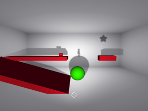
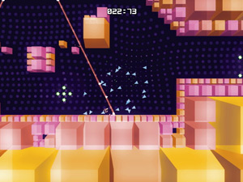

Presentation Outline
| Date | 17:00–19:30, September 25 (Fri.), 2009 |
|---|---|
| Venue | 201 on the 2nd floor, International Conference Halls |
Presentation Titles
-
Opening
-

Shadow Physics
Enemy Airship / United States
-

Swarm Racer 3000
Joseph White (Lexaloffle Games) / Japan
-
Review by the screening committee


Overview
The SENSE OF WONDER NIGHT (SOWN) is an event to discover new game ideas that will catch people by surprise and give them a “Sense of Wonder” — a sense that something will change in their world — right at the instant of seeing or hearing the concept. It spotlights motivated game developers by providing them with an opportunity to present their ideas and prototypes.
Last year, it received 67 entries from 14 countries and regions. 11 titles were selected for presentation, including 4 from outside Japan. The audience of more than 500 people from 22 countries and regions gathered for the presentations as well as for the concurrently-held International Party. It was a truly international event and ended in a great success.
The SOWN 2009 office has begun inviting entries to SOWN 2009. Why don’t you show your idea to the Tokyo Game Show audiences who come from around the world? And we would like you to be inspired by other presenters and audiences and find new experience and network at SOWN.
- Organized by:
Computer Entertainment Supplier's Association / Nikkei Business Publications, Inc. - In cooperation with:
International Game Developers Association Japan Chapter
Objectives of “SENSE OF WONDER NIGHT”
- To introduce games with a game design and ideas that are experimental and creative, and that cannot be called conventional or traditional
- To heighten awareness of the importance of creating a game that gives people a “sense of wonder”, a sense that something will change in their world, and to invigorate the game industry
- To offer people creating experimental games opportunities for the future
- To create new domains in the game industry
Games of any genre, platform, language, degree of completion, already released or non-released, which meet one or more of the following criteria:
- A game realizing an innovative user interface
A game that employs features such as natural language processing, image recognition or gesture control to present a new kind of experience - A game created through an automatic generation process
A game that creates a world where the game play or the environment in which the users are playing is changed dramatically according to selections made by the users - A game with an interactive story-telling concept
A game that presents a story experience in a new way with a potential of developing into a tool to create a totally new story - A game with emergent elements
A game that creates a new form of game play by skillfully incorporating the physical system into the game play elements and by combining AIs - An amazing game
Any kind of new, eye-grabbing, and impressive game!!
Games to which the following conditions apply will NOT meet the selection criteria:
- A game in which only the elements comprising the game are the key factor
A game in which the newness and highlight are focused on the elements comprising the game (such as the background setting, situation, character design, graphics, story, audio, etc.) instead of the game itself - A game of a new genre created by combining or rehashing existing genres
However, a game providing a truly new game experience may be considered for acceptance. - A game that is new only in targeting a specific user group
A game will not be deemed as being new and innovative just because it is focused on a specific user group (such as female users or the elderly). However, a game providing a truly new game experience may be considered for acceptance. - A game created for the purpose of demonstrating a technological innovation, experimental business model, or distribution mechanism
Games of this kind will not be completely rejected from the screening process, but they must demonstrate that they are capable of directly and tangibly changing the game experience.
Screening Committee
 |
Kenta Cho ABA Games Kenta Cho a.k.a. ABA Games is an independent game developer who mainly develops open-sourced 2D shooters. The best known work is TUMIKI Fighters which is called Blast Works in North America and was published for Wii. |
|---|---|
 |
Simon Carless Independent Games Festival / Gamasutra Is Chairman of the Independent Games Festival, which holds its awards at Think Services’ Game Developers Conference yearly, and has helped popularize independent and innovative gaming for 11 years. He is also a Group Publisher at Think Services, encompassing game products such as the Maggie award-winning Game Developer magazine and the double Webby award-winning Gamasutra website, the top information sources for professional video game developers in North America. |
 |
Kenji Sugiuchi ENTERBRAIN He is a producer who is in charge of planning and developing the game construction tool “Maker Series”. Currently developing the “Maker Series” for global launch. |
 |
Keita Takahashi NAMCO BANDAI Games Born in 1975 in Mojiko, Fukuoka Prefecture. Joined Namco (Now NAMCO BANDAI Games) in 1999. Released the “Katamari Damacy” software for PlayStation 2 in 2004. Released “NobiNobiBOY” software for PlayStation 3 in 2009. Currently developing “NobiNobiBOY” software for iPhone. |
 |
Takashi Katayama Vector Participated in setting up an online game business as part of the SoftBank Group, and then established ELEVEN-UP Inc. After a stint as the president and representative director of ELEVEN-UP, he is currently in charge of producing online games and establishing new services at Vector. |
 |
Kiyoshi Shin International Game Developers Association Japan Chapter Is also a game journalist, a lecturer at the Ritsumeikan University College of Image Arts and Sciences, and a member of the board of directors of the Computer Entertainment Supplier’s Association (CESA). |
Thanks
The “SENSE OF WONDER NIGHT” event has received a lot of inspiration from the “Experimental Gameplay Workshop” that was started at the Game Developers Conference in 2002. We would like to express our thanks to the many people who helped to make these workshops a success and to all our friends.
Enquiries
SOWN Secretariat : sown@nikkeibp.co.jp
(Only email enquiries will be accepted)